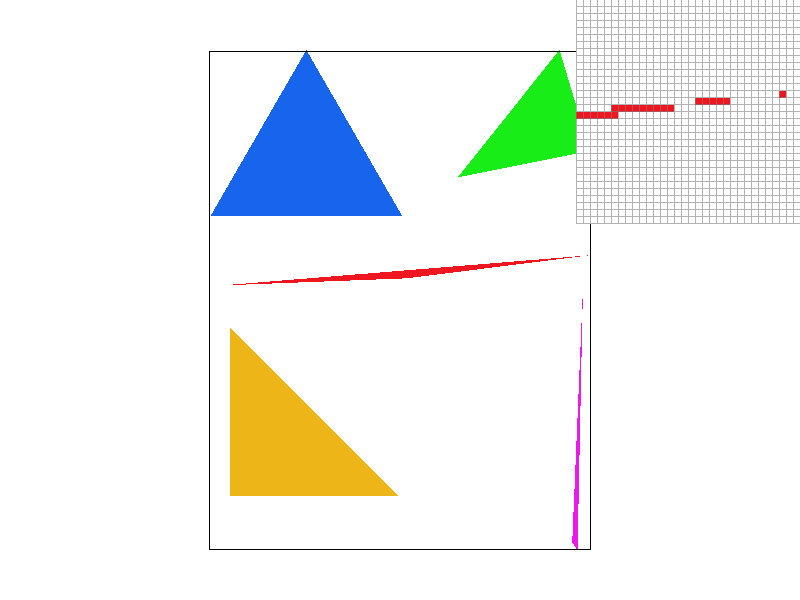
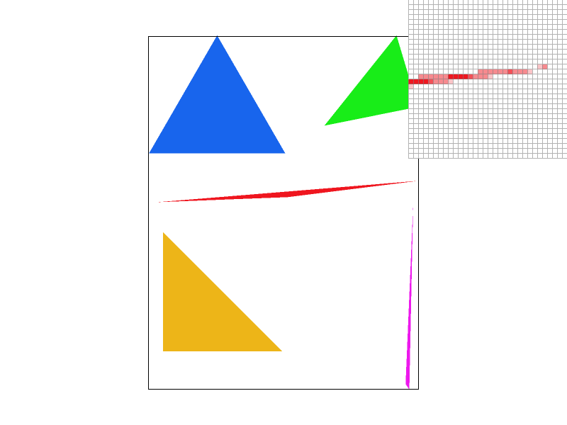
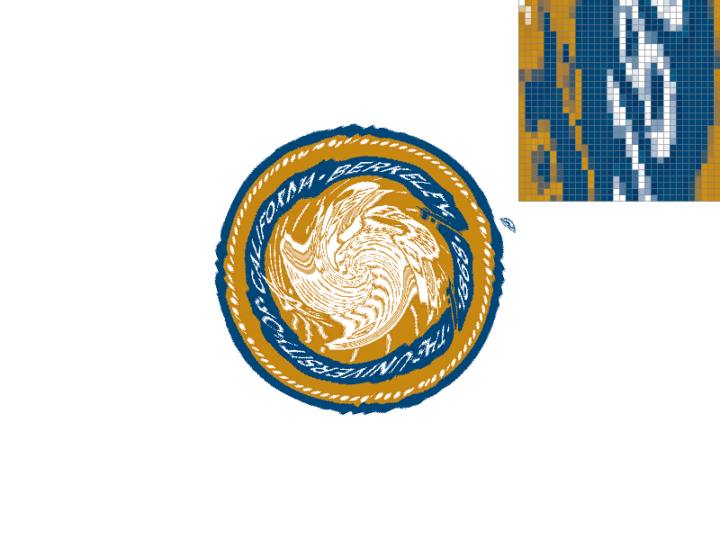
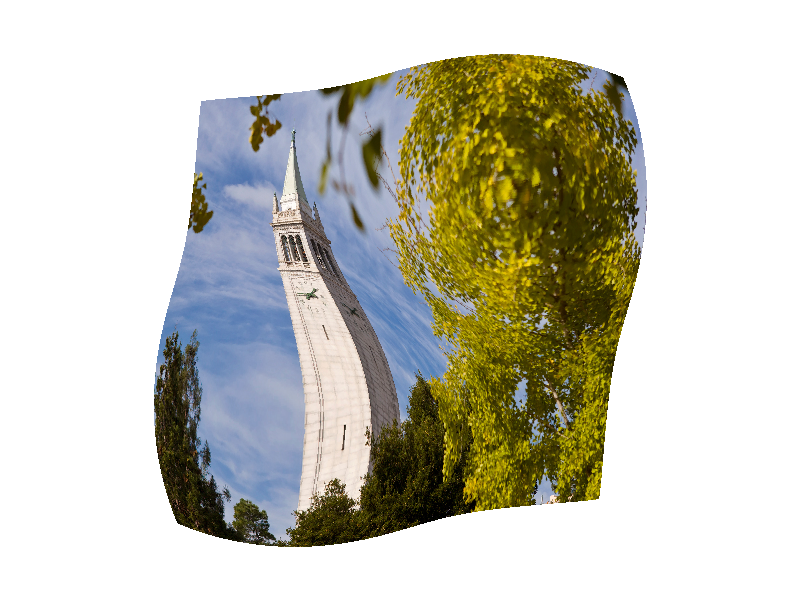
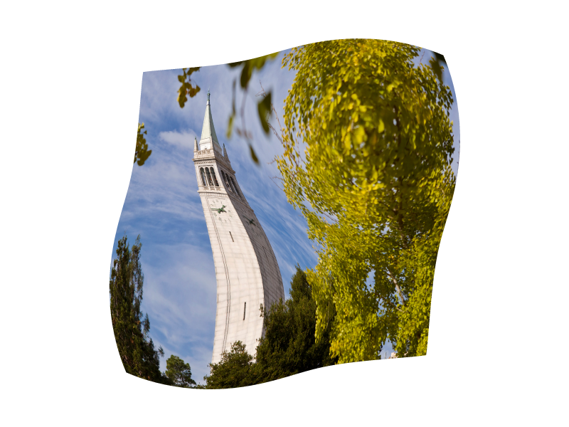
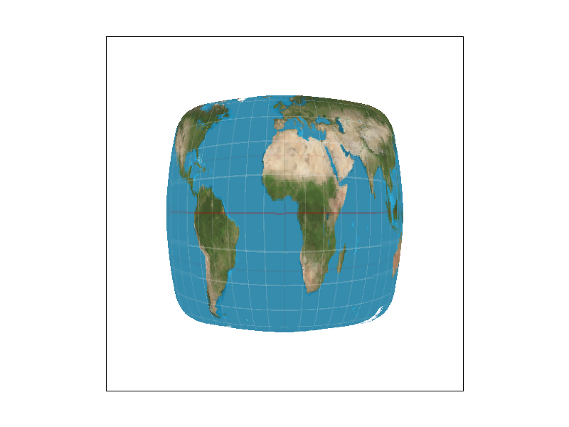
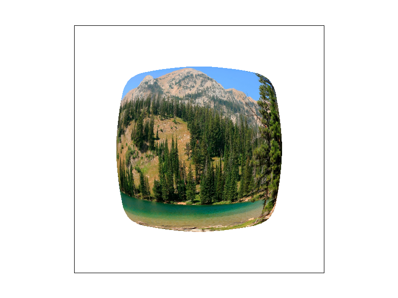
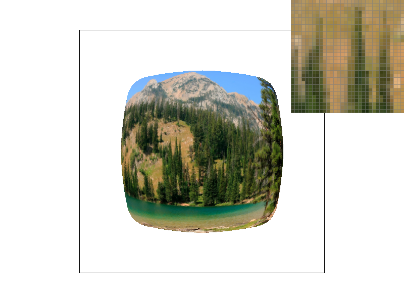

CS184/284A Spring 2025 Homework 1 Write-Up
Link to webpage: cal-cs184.github.io/hw-webpages-su25-awaldman0/hw1/index.html
Link to GitHub repository: github.com/cal-cs184/hw-rasterizer-swiss-cheese
Overview
In this homework, I implemented many important features of a software rasterizer, including drawing triangles, antialiasing via supersampling, transformations, interpolation within a triangle via barycentric coordinates, texture mapping, and various methods of pixel sampling and level sampling to improve how my program handles textures. Considering the relative simplicity of what I've built, I'm pretty suprised at how powerful/capable my rasterizer is, mainly when it comes to the effectiveness of the antialiasing techniques I implemented. I've gained a much deeper understanding of how geometry is represented in code and how computers can be leveraged to do the heavy lifting in the rasterization process. More specifically, I'm impressed when it comes to all of the interpolation that is done in order to represent things like colors and textures in a triangle. Above all else, I'm shocked at the speed of computers and the sheer number of operations per second being done to display an image on screen, especially as you increase the number of samples per pixel. I found myself very intrigued by the whole texturing process and the different methods of sampling texels and mipmap levels. I'd love to continue exploring that topic as the class continues and see how all of the concepts I've learned extend to 3D.
Task 1: Drawing Single-Color Triangles
When rasterizing triangles for this task, my goal was to take point data and appropriately translate it into graphical data that appears on screen. In doing so, I would use the color data passed intoRasterizerImp::rasterize_triangle() to fill in
the triangle I was working with. While rasterizing a single triangle does not look very impressive, repeated calls to the function allows me to display a great deal of triangles on screen, giving my rasterizer the ability to represent fairly intricate and
complex geometry.
In general, my triangle rasterization algorithm works by first sampling the center of each pixel within the bouding box of the triangle. If the center of the pixel lies in the triangle, I draw it to the screen.
In detail, the algorithm works as follows:
-
When checking if a point lies within a triangle, my algorithm assumes the points
(x0, y0), (x1, y1),and(x2, y2)are in counterclockwise winding order. Therefore, I need to ensure the x and y values passed into the function are in counterclockwise order by the time I do any bounds checking. I do this by creating two vectors, one between(x0, y0)and(x1, y1)and the other bewteen(x1, y1)and(x2, y2)and computing the cross product. If the cross product is negative, the point data is in clockwise order, in which case I swap the values of(x1, y1)and(x2, y2)to ensure a counterclockwise winding order. - Define a vector for each side of the triangle and its corresponding normal vector
- Among the x and y values passed into the function, find the smallest and largest x and y values. Then take the
floor()of those values and add 0.5, which gives us the coordinates of the center of each pixel that defines the triangle's bounding box. - Iterate through each pixel in the bounding box, checking if the center of the current pixel is in the triangle by calculating the dot product of the vector bewteen the "first" point in each side of the triangle and the current coordinate with its cooresponding normal vector.
- If the current point lies on screen and he dot product is greater than or equal to 0 (to ensure we rasterize the edges in addition to interior points) for all three sides, then we draw it on screen.
Task 2: Antialiasing by Supersampling
In order to remedy the aliasing seen in the screenshot from task 1, I implemented supersampling functionality into the rasterizer. Supersampling works by sampling multiple points within a single pixel and averaging out the results in order to determine a pixel's final color. This way, whether or not a triangle passes through the center of a pixel is no longer the sole factor when it comes to determining how a pixel is colored in. Supersampling is extremely helpful for getting rid of jaggies because it allows you to soften the edges of your geometry by blending edge pixels with those around them. When sampling, pixel/color data is initially stored in thesample_buffer vector before being finalized and put into rgb_framebuffer_target (which contains the data actually drawn to the screen). Since I need to store multiple samples per pixel and have to accomodate multiple potential sampling rates, I had to make some changes to the way my rasterizer manages memory to allow sample_buffer to be resized depending on the current sample rate.
In order to implement supersampling and support multiple supersampling rates, I did the following:
-
In
RasterizerImp::set_sample_rate(), I changedthis->sample_rateto equal the rate passed into the fucntion and altered the call toresize()to scale the size of the vector by the rate passed into the function. -
In
RasterizerImp::set_framebuffer_target(), I altered the call toresize()to scale the size of the vector by the rate passed into the function. -
I left
RasterizerImp::clear_buffers()unchanged.
RasterizerImp::rasterize_triangle() and RasterizerImp::fill_pixel().
I made the following changes to RasterizerImp::rasterize_triangle():
-
Within the nested for loop used to iterate through each pixel in the triangle's bounding box, I added another nested for loop that would perform
sqrt(sample_rate) * sqrt(sample_rate)samples at uniformally distributed locations within the current pixel. -
I defined a variable offset equal to
1 / sqrt(this->sample_rate). -
For pixel
(i, j)and sub-pixel location(k, l)I sampled at(i + (k * offset) + (offset / 2), j + (l * offset) + (offset / 2)), which resulted in evenly distributed samples within the pixel. - I performed the sample in-triangle tests as before, making sure to store the result at the proper index of
sample_buffer, whose size changed depending on the sample rate
Then, I altered RasterizerImp::fill_pixel() to set all of the indices corresponding to a particular pixel in sample_buffer to the same color so that the rasterizer could still render points and lines normally even after all of the samples within a pixel were averaged out.
Finally, I changed RasterizerImp::resolve_to_framebuffer() such that for each pixel (x, y), the function iterated through each sub-pixel sample, adding up the red, green, and blue componenets of the color stored at that location in sample_buffer. The function then divides the sums by the number of samples to obtain the average values of the red, green, and blue componenets of a particular pixel. Lastly, these average values are converted to 8-bit values and passed into rgb_framebuffer_target.
The results of using supersampling in my rasterizer can be seen below, as the edges look much smoother when the sampling rate is higher. Supersampling helps the rasterizer perform much better when it comes to displaying very thin pieces of geometry, as it no longer leaves a pixel totally blank when a triangle does not happen to overlap with its center.
|

|

|
|
|
|
Task 3: Transforms
After properly implementing transformations, I was able to employ scaling, translation, and rotation operations to alter robot.svg and create something new. I decided to try to make cubeman do some yoga, which I figured would require using all of the transformations I just coded in order to make the pose look right. The screenshot below depicts cubeman in tree pose.Task 4: Barycentric coordinates
While having the ability to draw single-color triangles is nice, being able to represent a wide range of values (whether it be color data, texture data, normals, etc.) within a single triangle is very imporant in computer graphics. Up until now, my rasterizer was not equipped to handle that. I implemented this functionality by associating color data (in this case) with each vertex in a triangle and used interpolation to inform the rasterizer how to color all of the other pixels in the triangle. Smooth interpolation was achieved through the use of barycentric coordinates. In the barycentric coordinate system, each vertex in the triangle is associated with a point(α, β, γ). Vertex A is located at (1, 0, 0), vertex B is located at (0, 1, 0), and vertex C is located at (0, 0, 1). An arbitrary point (α, β, γ) represents a linear interpolation between all 3 vertices at once, and can be converted back to regular coordinates with the following formula: \( (x, y) = α * A + β * B + γ * C \), where \( α + β + γ = 1 \).
Likewise, we can use this formula to linearly interpolate color data associated with each vertex \( C(x, y) = α * CA + β * CB + γ * CC \). Values for α, β, and γ can be derived using the positions of the vertices and the current position using the equations below.
sample_buffer.
rasterize_interpolated_color_triangle(), only the vertices had any explicity defined color data, with vertex A, B, and C being colored red, green, and blue respectively. The color for every other pixel is some linear combination of the other three colors, and the use of barycentric coordinates allow for smooth interpolation between all three colors at once. After applying this concept to a single triangle, I was able to rasterize the image below, whose triangles corresponding color data combine to create a color wheel.
Task 5: "Pixel sampling" for texture mapping
In computer graphics, pixel sampling involves getting color data for a specific pixel by sampling an image/texture at a position that properly cooresponds to the pixels position. When pixel sampling, one must convert between(x, y) position coordinates and (u, v)texture coordinates to ensure that we are sampling the texture at the correct location. In our case, each vertex of a particular triangle is associated with a (u, v) coordinate. It is our job to figure out where to sample the texture for the rest of the point in the triangle. As before, this requires interpolating bewteen the three (u, v) coordinates we are given, so I once again used barycentric coordinates for calculate the proper texture coordinates for each sample. As a result, my solution for this task looks extremely similar to my implementation for task 4. The code for rasterize_textured_triangle largely followed the structure of rasterize_interpolated_color_triangle with two key differences:
-
When swapping the values of
(x1, y1)and(x2, y2)if vertices are passed into the fucntion in clockwise winding order, it is extremely important to also swap the values for(u1, v1)and(u2, v2). If this is not done, the texture will be mirrored for triangles whose vertices were originally in clockwise winding order, leading to a very ugly "sharding" effect a textured image. Upon realizing this, I updated my implementation ofrasterize_interpolated_color_triangleto properly swap colors around in the event of a clockwise winding order, as that would leading to similar errors that I was lucky enough to not run into yet. -
When assigning a color to the current sample, I needed to call either
sample_nearestorsample_bilineardepending on the current pixel sampling mode.
(u, v) texture coordinates that we derive from screen-space positions are very unlikely to be whole numbers. We need whole numbers in order to get color data from the texels vector, however, so we need to find a way to convert our floating point (u, v) values to color data. The first method, which I implemented in sample_nearest simply rounds u and v to the closest whole number and uses them to sample from the texture. This works, but it can lead to a more pixelated look in the final image. The other method, which I implemented in sample_linear, first samples the four texels closest to u and v before performing a series of linear interpolations to determine the appropriate color at (u, v). While more computationally expensive, this results in a smoother image than nearest neighbor pixel sampling.
|

|
|
The difference between the two pixel sampling methods is extremely apparant in the images above. Bilinear sampling is clearly preferable in this case, as it makes the text on the seal much more legible by smoothing out color differences.
|

|

|
|
|
|
Pictured above are four copies of the same image using different pixel sampling methods and supersampling rates. AT 1 sample per pixel, the differences between nearest-neighbor and bilinear pixel sampling aren't too hard to spot, espectially if you zoom in on the left edge of the campinele. When we increase the number of samples per pixel to 16, however, the difference is nearly imperceptible (even under the pixel inspector), going to show how using a more computationally expensive and "better" pixel sampling method does not always result in noticeably higher quality image. This means that, in certain situations, bilinear pixel sampling may not be worth it over simpler, less precise approaches to texture sampling. In general, We will see large differences bewteen bilinear and nearest neighbor sampling when the number of samples per pixel is small because bilinear filtering allows us to represent the color at a given (u, v) coordinate better than nearest neighbor due to the interpolation that takes place in bilinear filtering. At higher sampling rates, nearest neightbor interpolation will wind up sampling mulitple different texels before the color values are averaged out in the framebuffer, mimicking the smoothing effect bilinear interpolation tends to have. As a result, the differences bewteen the two methods are very difficult to spot at high smapling rates.
Task 6: "Level Sampling" with mipmaps for texture mapping
When sampling textures in computer graphics, there will most likely not be a 1:1 pixel to texel mapping. This can lead to undesirable outcomes in situations where a low resolution texture is being sampled at a high rate (too blurry) or a high resolution texture is being sampled at a low rate (leads to aliasing). This problem can be especially difficult when the exact same texture is being sampled by triangles at different distances from the camera. One way of solving is this is by creating a mipmap composed of the different versions of same texture, each one sampled at a lower resolution than the last. When it comes time to texturing a specific pixel, one can calculate the local sampling rate by finding the rate of change of u and v around the current pixel. You can then use the formulas below to calculate the mipmap level that corresponds to the local sampling rate.rasterize_textured_triangle to call sample, a more generalized texture sampling function that would take care of level sampling as well as pixel sampling for our texture. I also had to calculate the uv barycentric coordinates of (x+1,y) and (x,y+1) in rasterize_textured_triangle, which were crucial for finding the proper mipmap level. I then implemented get_level (a helper function for sample) according to the spec, which would perform the math shown above to find the mipmap level D that corresponds to a particular (u, v) coordinate. Lastly, I implemented sample, which makes a call to the appropriate sampling function using the correct level given the currently selected pixel sampling and level sampling methods.
The three leveling methods I implemented are the following
- L_ZERO: sample from the 0th level of the mipmap
-
L_NEAREST: round the level returned by
get_levelto the nearest integer and use that to sample the mipmap. -
L_LINEAR: sample the two levels closest to the value return by
get_leveland linearly interpolate bewteen them to determine the color of a pixel.
|
|

|

|
Now that my rasterizer is capable of producing textured images with a variety of pixel sampling/level sampling methods at multiple numbers of samples per pixel, it is worth mentioning the advantages and tradeoffs of using various combinations of these antialiasing techniques. When it comes to speed it's pretty clear that having more samples per pixel and using interpolation based pixel and level sampling methods are simply not as fast as the other options. A high supersampling rate means the rasterizer needs to iterate through and store a mich higher volume of samples, which clearly causes a slowdown and eats up more memory since the size of sample_buffer needs to be scaled accordingly. Bilinear pixel and linear level sampling are slower than their nearest-neighbor counterparts because many more calculations need to be performed per-pixel to interpolate between values. Despite the slowdown, interpolation-based sampling methods clearly give the user more antialiasing power, as they can offer a more accurate/smooth approximation of the color at a specific coordinate when compared to nearest neighbor sampling (as seen in Part 5). When used in conjunction, high supersampling rates and bilinear pixel/level sampling give the user a ton of antialiasing power, but one must be wary of things like overblur, where an image is antialiased to such an extent that the whole image loses detail. Using a picture of Custer Gallatin National Forest (source), I will test four different combinations of pixel and level sampling methods and compare their performances (supersample rate 1 per pixel).
|

|
|
|
|

|
When looking at the images above, I find that using linear level sampling and nearest pixel sampling provides the best overall result for this image. Looking at the images that use nearest level sampling, the bourdaries where adjacent mipmap levels are being used is pretty apparant and looks unappealing. If you looks at the center of the image and starts scanning outwards, there are definite jumps in how pixelated the image looks. Each of these jumps represent my rasterizer using a different mipmap level to texture the image. Additionally, the bilinear pixel sampling used in the top right image seems to add a bit of extra blur, making the change in texture resolution especially visible around the edges of the image. Next, we can examine bottom two images, which use linear level sampling. You aren't able to see the transitions bewteen mipmap levels, which is very nice. It seems the image on the bottom right is suffering from a bit of overblur though, which is made evident if you look at the pixel inspector. The image using nearest pixel sampling retains the details of the tops of the trees and the hill in the background but the image using trilinear sampling totally loses those details. As a result, I feel the image that uses linear level sampling and nearest pixel sampling does the best job representing this forest landscape.